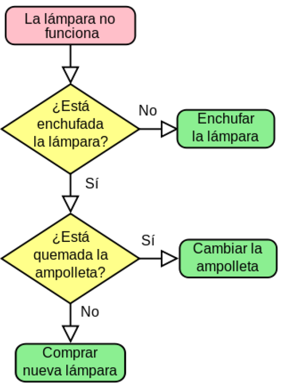
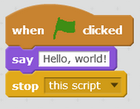

1. Que és programar
La programació és el procés que s'aplica quan es crea algun tipus d'aplicació o programari, així com quan cal dur a terme algun concepte o projecte que necessita l'ús d'un llenguatge informàtic. Existeixen molts tipus de programació, depenent del llenguatge de programació que s'utilitze.
Programar (en informàtica) és dir-li a un ordinador què ha de fer, pas a pas, utilitzant un llenguatge que puga entendre.
És com donar-li instruccions molt clares, per exemple:
- "Encén la llum"
- "Suma aquests dos números"
- "Mostra aquest missatge a la pantalla"
L'ordinador no pensa per si mateix, així que tu, com a programador o programadora, li escrius un conjunt d'instruccions anomenades programa perquè faça el que tu vols.
Programar és crear solucions automatitzades a problemes reals o lògics mitjançant codi, perquè les execute un ordinador.
Què és un programa?
Un programa és un conjunt organitzat d'instruccions que han sigut escrites en un llenguatge de programació comprensible per un ordinador. Aquestes instruccions indiquen a la màquina quines operacions ha de realitzar per a dur a terme una tasca determinada o resoldre un problema específic.
Els programes poden variar molt en complexitat: des de senzilles aplicacions com una calculadora o una llanterna digital, fins a sistemes molt avançats com videojocs amb intel·ligència artificial o programes de gestió bancària que processen milions d'operacions.
Quan un usuari executa un programa, aquest comença a funcionar seguint les instruccions pas a pas, de manera precisa i ordenada, tal com han sigut dissenyades pel programador o programadora.
Característiques d’un programa
- Està escrit per un programador: Una persona amb coneixements d’informàtica i llenguatges de programació que crea les instruccions.
- Segueix una lògica específica (algorisme): El funcionament del programa es basa en una seqüència ordenada de passos que resolen un problema o realitzen una acció.
- S’executa pas a pas pel processador de l’ordinador: L’ordinador interpreta les instruccions i les executa en l’ordre indicat.
- Pot ser simple o complex: Hi ha programes molt senzills amb poques línies de codi, i altres molt avançats amb milers o milions de línies.
En resum, un programa és una eina fonamental per a comunicar-se amb les màquines i fer que realitzen exactament allò que necessitem, des d’automatitzar processos fins a crear experiències interactives i útils per a les persones.
Què és un algorisme?
Un algorisme és un conjunt d'instruccions ben definides i ordenades (normalment escrites mitjançant codi de programació informàtic) que tenen com a finalitat resoldre un problema concret, donar com a resultat un càlcul determinat o dur a terme una tasca específica.
En altres paraules, un algorisme és un procediment detallat que s'executa pas a pas. Pot incloure bucles (repeticions), interaccions amb l'usuari, i condicions (com "si passa això, fes allò"), i totes aquestes parts estan interconnectades per a aconseguir un objectiu determinat.
Els algorismes són essencials en el món de la programació i la informàtica, ja que permeten estructurar el pensament lògic i convertir-lo en accions que l’ordinador pot seguir.
Instruccions o regles
S’anomena instrucció o regla a la forma més bàsica de programació amb sentit. Podem dir que una instrucció és una o diverses línies de codi que tenen una lògica pròpia i representen una acció o una ordre dins del programa.
Per exemple, una instrucció pot ser:
mostra("Hola món")— Mostra un missatge en pantalla.si (x > 0) { suma = x + y }— Comprova una condició i executa una suma si es compleix.repetix 10 vegades { dibuixa una línia }— Executa una acció múltiples vegades.
Les instruccions són les peces bàsiques amb què es construeixen els algorismes, i estos, al seu torn, són la base del funcionament de qualsevol programa informàtic.
Llenguatges de programació
Els ordinadors no entenen el llenguatge humà (com ara el valencià, el castellà o l’anglés). Necessiten instruccions precises i estructurades, sense ambigüitats ni dobles sentits.
Els llenguatges de programació estan dissenyats per ser clars, lògics i estrictes en la seua estructura, però alhora molt més fàcils d'utilitzar que el llenguatge màquina (format només per zeros i uns).
Un llenguatge de programació és una manera de comunicar-se amb un ordinador per donar-li instruccions. Es tracta d’un conjunt de regles i símbols que els programadors utilitzen per escriure programes que la màquina puga comprendre i executar.
Cada llenguatge té les seues pròpies normes i sintaxi, adaptades per resoldre certs tipus de problemes o realitzar determinades tasques. Per exemple:
- Python: Conegut per la seua simplicitat i llegibilitat. És ideal per a principiants i per a aplicacions de ciència de dades.
- C++: Destaca en el desenvolupament de sistemes i videojocs, gràcies al seu alt rendiment i capacitat de control del maquinari.
L’elecció del llenguatge més adequat depén del projecte i dels objectius que es volen aconseguir. A mesura que la tecnologia evoluciona, apareixen nous llenguatges i es modernitzen els existents, cosa que amplia constantment les possibilitats per als programadors i assegura que la programació continue sent un camp dinàmic i en creixement continu.
Tipus de llenguatges de programació
Segons nivell d'abstració
- Baix nivell
- Alt nivell
Segons el seu ús o aplicació
- De propòsit general
- Especifics
Segons paradigma de programació
- Imperatius
- Orientats a objectes
- Declaratius
- Funcionals
- Logics
S’especifica com s’ha de fer alguna cosa pas a pas
C, Python,Java
Es basen en la idea d’"objectes" que encapsulen dades i comportaments.
Java, C++, Python, Ruby
Es descriu què s’ha de fer, no com fer-ho
SQL, HTML, CSS
Es basen en funcions matemàtiques
Haskel, Lisp
Utilitzen regles lògiques i inferència per a resoldre problemes
Prolog
Segons la execució
- Interpretats
- Compilats (compilador)
- Bytecode (Semi-compilats)
Són executats línia per línia per un intèrpret, sense compilar a codi màquina directament.
Són traduïts a codi màquina abans d'executar-se
Es compilen a un codi intermedi (anomenat bytecode) i després s’interpreten o s’executen en una màquina virtual
| Tipus | Exemples | Execució |
|---|---|---|
| Compilats | C, C++, Rust, Go | Directe, ràpid |
| Interpretats | Python, JavaScript, Ruby | Intèrpret, flexible |
| Semicompilats | Java, C#, Kotlin | Bytecode + màquina virtual |
Java i Python semblen similars perquè tots dos compilen a bytecode i després s'executen dins d'una màquina virtual, però hi ha diferències importants en com funcionen i en la seva arquitectura
Python compila a bytecode i s’executa amb una màquina virtual (PVM) que interpreta aquest bytecode. No fa JIT per defecte
Java compila explícitament a bytecode i després la JVM fa JIT (compilació Just-In-Time), convertint el bytecode a codi màquina en temps d’execució → això fa que sigui més proper a un llenguatge compilat.
Com s'aborda la programació
La programació, encara que pot paréixer intimidant al principi, es pot abordar de manera sistemàtica seguint alguns passos clau. Amb una bona metodologia, és possible desenvolupar programes útils i funcionals fins i tot sense experiència prèvia.
Passos per programar de manera efectiva
- Definir el problema: El primer pas és identificar clarament quin problema es vol resoldre o quin objectiu es pretén aconseguir amb el programari.
- Seleccionar el llenguatge de programació: Escollir el llenguatge més adequat segons el tipus de projecte, el rendiment desitjat i el nivell d’experiència.
- Dissenyar un algorisme: Elaborar un pla que descriga pas a pas com s’aconseguirà l’objectiu, utilitzant una lògica clara i estructurada.
- Escriure el codi: Traduir l’algorisme al llenguatge de programació escollit, respectant la seua sintaxi.
- Depurar: Comprovar que el codi no conté errors i corregir-ne qualsevol que impedisca el funcionament correcte del programa.
- Provar i mantindre: Realitzar proves exhaustives per assegurar que el programa funciona com cal i dur a terme el manteniment necessari al llarg del temps.
La programació és un procés iteratiu i creatiu que requereix paciència, atenció als detalls i capacitat de resoldre problemes. No obstant això, amb pràctica i dedicació, qualsevol persona pot aprendre a programar de manera eficaç.
Què és un IDE?
IDE significa «Entorn de Desenvolupament Integrat» (en anglès: Integrated Development Environment). És un programa que reuneix totes les eines que necessites per programar en un sol lloc.
Un IDE normalment inclou:
- Editor de codi: Per escriure i editar el teu codi.
- Compilador o intèrpret: Per traduir el codi a un llenguatge que l’ordinador puga entendre.
- Depurador (debugger): Per detectar i corregir errors en el codi.
- Gestor de projectes: Per organitzar els fitxers i carpetes del projecte de manera ordenada.
- Colorejat de sintaxi: Per facilitar la lectura del codi amb colors segons la sintaxi.
- Botó d’execució: Per provar el teu programa directament des de l’IDE.
A més, molts IDEs inclouen funcionalitats addicionals com a la integració amb sistemes de control de versions (com Git), completat automàtic (autocompletion), plantilles de codi i eines de testing, que fan el procés de desenvolupament més eficient i còmode.
Exemples d'IDEs
- Visual Studio Code: IDE sencill i generalista
- PyCharm: IDE per a Python
- Eclipse: IDE multi-llenguatge. Java, C++, Python, PHP, JavaScript i més
- NetBeans: IDE multi-llenguatge de Sun Microsystems, ara de ASF.
- Bluej: Per a java.
- i més....
Què és el pensament algorítmic, o pensament computacional
És la capacitat de resoldre problemes pas a pas, de manera lògica, ordenada i sistemàtica, com si estigueres creant un algorisme.
Un algorisme és una seqüència clara i finita de passos que condueixen a una solució concreta.
Per tant, el pensament algorítmic és:
- Pensar com si anares a escriure un programa.
- Dividir el problema en parts més xicotetes.
- Planificar els passos a seguir.
- Assegurar-te que cada pas tinga sentit i estiga en l’ordre correcte.
Exemple
En la sèrie The Big Bang Theory, hi ha un moment divertit on Sheldon explica l’"Algorisme de l’amistat", un procés lògic i detallat per a fer amics. És un exemple simpàtic i visual de pensament algorítmic.
Pots veure’l al minut 1:49 d’aquest vídeo:
Algoritme de l’amistat – The Big Bang Theory
Què inclou el pensament algorítmic?
- Descomposició: dividir un problema gran en parts més petites.
- Reconeixement de patrons: identificar similituds o repeticions en les dades o processos.
- Abstracció: centrar-se en l’essencial i descartar el que no és necessari.
- Disseny d’algorismes: crear els passos per arribar a la solució.
Exemple senzill (vida real): Fer un cafè
Problema: Fer un cafè.
Pensament algorítmic:
- Posar aigua a la cafetera.
- Col·locar el filtre.
- Afegir cafè mòlt.
- Encendre la cafetera.
- Esperar que acabe.
- Servir en una tassa.
Cada pas està clarament definit, en ordre, i condueix al resultat desitjat.
La descomposició
La descomposició consisteix en el procés de dividir un problema complex o sistema en parts més petites, que són més senzilles i més fàcils d’entendre.
Cada part es pot examinar i resoldre, o dissenyar individualment, ja que són més fàcils de treballar.
La descomposició és una habilitat important per crear algorismes i processos que es poden implementar en un dispositiu informàtic, perquè els ordinadors necessiten instruccions molt específiques.
Necessiten que se’ls diguen cadascun dels passos petits que han de seguir per fer les coses.
Què és l'abstracció en programació?
L’abstracció és el procés d’ocultar els detalls complexos i mostrar només allò necessari perquè una cosa siga més fàcil d’entendre i d’utilitzar.
És com centrar-se en el que és important i ignorar el que no cal saber en un moment determinat.
Exemple senzill (vida real):
Pensa en un cotxe:
- Només necessites el volant, els pedals i la palanca de canvis per a conduir.
- No necessites saber com funciona el motor internament ni com circula la gasolina.
Això és abstracció: fer ús d’una cosa sense conéixer tots els seus detalls interns.
En programació:
Quan programes, utilitzes funcions, classes i mòduls que realitzen tasques complexes, però només t’importa què fan, no com ho fan per dins (a menys que necessites modificar-los).
L’abstracció et permet treballar a un nivell més alt i centrar-te en la resolució de problemes sense quedar atrapat en la complexitat tècnica de cada component.
Reconeixement de patrons en un context de pensament computacional
Què és el reconeixement de patrons?
És el procés de detectar estructures que es repeteixen o característiques comunes entre diferents situacions o problemes. Aquest reconeixement permet resoldre problemes de manera més eficient, ja que es poden aplicar solucions conegudes a situacions semblants.
Exemple simple
Suposa que tens aquests números:
2, 4, 6, 8, 10, ?Amb reconeixement de patrons, observes que cada nombre augmenta en 2, així que pots predir que el següent és 12.
Per a què serveix en pensament computacional?
- Simplificar problemes complexos detectant similituds
- Evitar repetir treball aplicant solucions reutilitzables
- Millorar l’eficiència de programes i algorismes
- Identificar errors o comportaments no desitjats (com en dades o sistemes)
Exemples en programació
1. Validar correus electrònics:
import re
re.match(r"\w+@\w+\.\w+", "usuari@email.com")2. Detectar patrons en l’entrada de l’usuari (paraules repetides, errors, formats, etc.)
3. Fer servir bucles quan una acció es repeteix:
for i in range(5): # Patró: repetir 5 vegades
print("Hola")Representació d'algorismes
Amb la creació d’un algorisme, es fa evident la necessitat de plasmar una idea abstracta en una representació objectiva que guie el lector a través del procés de resolució del problema. Per això, hi ha moltes formes de representació que serveixen com un mapa que mostra els diferents camins que es poden seguir.
1 Diagrama de flux
El diagrama de flux, també conegut com a flujograma o diagrama d’activitats, representa mitjançant figures geomètriques codificades, fletxes i text el procés que s’ha de seguir per resoldre un problema concret. Això facilita la visualització de diversos camins, que poden ser circulars (quan tornen al punt previ) o unidireccionals (quan comencen un procés).
Símbols bàsics utilitzats:
- Rectàngul o caixa: representa una activitat, operació o tasca.
- Rombe: representa una condició, pregunta o decisió plantejada. Sempre s’ha de respondre amb “Sí” o “No”.
- Línia amb fletxa: representa la direcció de les activitats o flux.
És important conèixer que en els diagrames de flux hi ha només un punt d'inici i només un punt final. A més d’això, existeixen altres normes tècniques que normalitzen el seu ús.
2 Pseudocodi
El pseudocodi és una descripció INFORMAL i resumida d’una sèrie d’instruccions, del funcionament bàsic d’un programa o d’un algorisme.
Veiem-ho amb un exemple: com fer una trucada amb un telèfon mòbil:
INICI
Desbloquejar mòbil
Entrar a l'aplicació de trucades
Marcar el número desitjat
Premre la tecla de trucada
Esperar la resposta
Parlar
Premre la tecla de finalització de trucada
Bloquejar mòbil
FI
3 Programació amb codi
La programació amb codi fa referència a aquella que utilitza un llenguatge o codi propi per dur a terme una sèrie d’accions en un programa determinat.
És necessari, doncs, conèixer el llenguatge del programa per poder escriure les ordres necessàries.
Hi ha una gran varietat de llenguatges informàtics per programar; alguns exemples són: JAVA, C, C++, Python i C#.
4 Programació visual
La programació visual és aquella que simplifica enormement la creació de l’algorisme de resolució, ja que la codificació del codi ja ha estat prèviament creada i codificada en una sèrie d’elements visuals que l’editor només ha de seleccionar en l’ordre que desitja per crear el seu codi.
Generalment, aquests elements visuals estan situats dins d’un IDE (Entorn Integrat de Desenvolupament), força amigable, que ajuda a seleccionar-los, dividint-los per categories, pintant-los de diferents colors i assignant-los diferents formes segons la seva aplicació.
En el cas de Scratch, aquests elements visuals es coneixen com a “bloques” i fan referència a la seva forma.
Resum
La formació del pensament computacional ajuda a aprendre a descriure un problema, identificar quins són els detalls importants que es necessiten per resoldre aquest problema, dividir-lo en petits passos lògics (per tal de crear un procés que solucioni el problema) i després avaluar aquest procés.
Quin és l’algorisme més important de la història?
Programació Imperativa vs Declarativa en Python
Programació imperativa
La programació imperativa consisteix a dir-li a l’ordinador pas a pas què ha de fer per aconseguir un resultat.
Exemple:
llista = [1, 2, 3, 4, 5, 6]
suma = 0
for x in llista:
if x % 2 == 0:
suma += x
print(suma)- Control explícit del flux (bucles, condicions).
- Centrat en el “com” es fa.
- Més prop del funcionament intern del sistema.
Programació declarativa
En la programació declarativa, descrius el que vols aconseguir, no com aconseguir-ho pas a pas.
Exemple:
llista = [1, 2, 3, 4, 5, 6]
suma = sum(filter(lambda x: x % 2 == 0, llista))
print(suma)- Evita estat mutable i bucles explícits.
- Centrat en el “què” es vol fer.
- Ús de funcions com
map,filter,reduce.
Diferències clau
| Aspecte | Imperativa | Declarativa |
|---|---|---|
| Enfocament | Com fer-ho (pas a pas) | Què vull fer |
| Llegibilitat | Més llarga, més explícita | Més concisa, menys intuïtiva |
| Control del flux | Bucle for, while |
Funcions de més alt nivell |
| Estat mutable | Normalment sí | Evita-ho |
✅ En Python es poden usar ambdós estils, i combinar-los segons convinga.
Programació estructurada vs Codi espagueti
🍝 Què és el "codi espagueti"?
El codi espagueti és un terme informal per descriure un programa:
- Difícil d’entendre
- Ple de salts (com
gotoobreaka tot arreu) - Sense estructura clara
- Difícil de mantenir o modificar
Sembla un plat d’espaguetis: tot enredat i sense ordre.
🧱 Què és la programació estructurada?
La programació estructurada és un estil que organitza el codi de forma lògica i clara. Fa ús de:
- Seqüències: instruccions una rere l’altra
- Condicionals:
if,else - Bucles:
for,while - Funcions: per dividir el codi en parts reutilitzables
Això ajuda a que el codi sigui:
- Més fàcil d’entendre
- Més fàcil de mantenir
- Més fàcil de provar
🔍 Comparació ràpida
| Característica | Codi espagueti 🍝 | Programació estructurada 🧱 |
|---|---|---|
| Organització | Caòtica | Lògica i modular |
| Ús de funcions | Poc o gens | Repartit en funcions |
| Control de flux | Saltant entre línies (com goto) |
Seqüencial, condicional i amb bucles |
| Mantenibilitat | Molt difícil | Fàcil d’actualitzar |
| Llegibilitat | Confusa | Clara i ordenada |
| Exemple visual | Bola d'espaguetis | Blocs de construcció |
✅ Exemple de codi espagueti
x = int(input("Introdueix un nombre: "))
if x > 0:
print("És positiu")
else:
if x == 0:
print("És zero")
else:
print("És negatiu")✅ Exemple amb programació estructurada
def classifica_nombre(x):
if x > 0:
return "És positiu"
elif x == 0:
return "És zero"
else:
return "És negatiu"
x = int(input("Introdueix un nombre: "))
print(classifica_nombre(x))Programació OO vs Programació OE (esdeveniments)
Programació Orientada a Objectes (POO)
Definició:
És un paradigma basat en la creació d'objectes que encapsulen dades i comportament. Cada objecte és una instància d'una classe.
Característiques:
- Classes i objectes: Definim estructures (classes) i en creem instàncies (objectes).
- Encapsulament: Les dades i funcions es mantenen dins de l'objecte.
- Herència: Les classes poden derivar-ne d'altres per reutilitzar codi.
- Polimorfisme: Diferents objectes poden respondre de manera diferent al mateix missatge/metode.
Exemple (en Python):
class Cotxe:
def __init__(self, marca):
self.marca = marca
def arrancar(self):
print(f"El cotxe {self.marca} ha arrancat.")
cotxe1 = Cotxe("Toyota")
cotxe1.arrancar()Programació Orientada a Esdeveniments (POE)
Definició:
És un paradigma on el flux del programa es controla a través de la gestió d’esdeveniments com clics de ratolí, entrada de teclat, missatges de xarxa, etc.
Característiques:
- Gestors d’esdeveniments: Funcions que responen a determinats esdeveniments.
- Listeners (o observadors): Estan a l’espera d’un esdeveniment per actuar.
- Desencadenament (trigger): L’execució no segueix un flux lineal, sinó que reacciona als esdeveniments.
- Molt usada en interfaces gràfiques, videojocs i aplicacions web asíncrones.
Exemple (en JavaScript):
document.getElementById("boto").addEventListener("click", function() {
alert("Has fet clic al botó!");
});Diferències Clau
| Aspecte | POO | POE |
|---|---|---|
| Enfocament | Modelar entitats com objectes | Reaccionar a esdeveniments |
| Flux de control | Controlat per lògica interna de les classes | Controlat per l’activació d’esdeveniments |
| Ús típic | Aplicacions amb lògica de negoci complexa | Aplicacions interactives, UI, videojocs |
| Exemple d’ús | ERP, sistemes de gestió, models de domini | Aplicacions web, GUI, videojocs, Arduino |
🧩 Combinació dels dos
Molts entorns de programació combinen POO amb POE. Per exemple, una aplicació web pot tenir objectes (usuari, producte, comanda) i també respondre a esdeveniments com clics o sol·licituds del servidor.